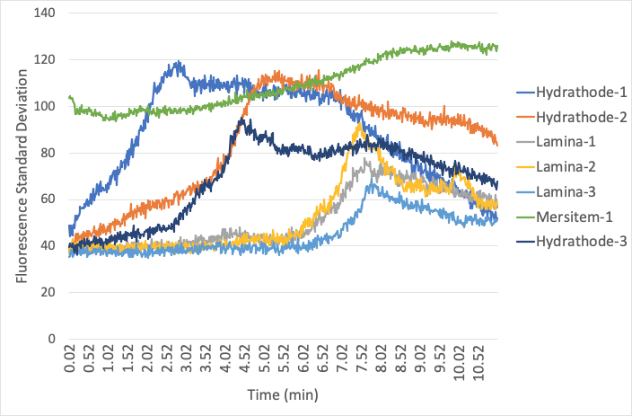
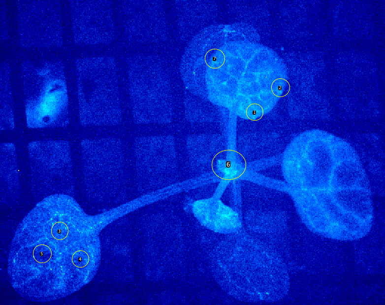
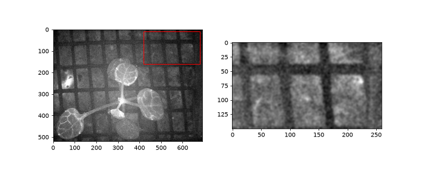
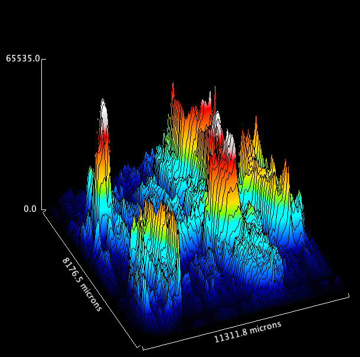

Forensic Data Curation · Re-Reading the 2020 Analysis
Three Things the Raw Zeiss .czi Files Change About the 2020 Deck
In April 2020, the preliminary slide deck (“The Original Flood Wave”) concluded that “Hydathodes appear to be the source of Calcium waves in the leaves almost within seconds of flooding the roots.” Checking the 2020 spreadsheet (Flood_Glow_Shreya_DRB_Spring_2020.xlsx) and five exported .avi videos against the raw .czi pixel arrays explains why.
Within-ROI standard deviation was plotted
The 2020 “All Flood Waves” chart plotted Fiji’s StDev column (y-axis: “Fluorescence Standard Deviation”). Standard deviation measures spatial patchiness and edge contrast inside a circle—not cytosolic Ca2+ concentration. Five of the six tabs in the 2020 workbook did not even save the Mean column.
Burned-in video clocks ran 17.5% slow & dropped 48.5 s
The camera ran at a median of 1.212 s per frame (574.8 ms exposure), not 1.000 s. Each 2020 .avi dropped the first 40 frames (48.5 s) and stamped 00:00 at raw frame 40. Thus “06:36 Time” on slide 55 was actually 8 min 48 s into the recording.
Not every “hydathode” circle sat on a leaf margin
Six runs were measured in the 2020 workbook (expts 5, 6, 7, 8, 10, 11), but only expt 8 was shown. Registered onto raw expt 8 (NCC 0.959), Hydrathode-2 (75% on plant) and Mersitem-1 (76% on plant) straddle the leaf edge, gaining SD whenever the leaf brightens against the dark background.

Original 2020 chart (Slide 55): Y-axis reads “Fluorescence Standard Deviation”; time axis starts at raw frame 40 (48.5 s into the run). Click image to enlarge.

2026 Re-computation on raw expt08 (analysis/roi2020.py): Left: Raw pixel standard deviation inside the exact same 7 circles reproduces the 2020 curves. Right: Background-subtracted mean fluorescence inside the same circles rises gradually over 8–11 min. Click image to enlarge.

The seven 2020 ROIs on expt08: Registered onto the raw 692 × 520 px frame with normalized cross-correlation NCC = 0.959 (circle radius 245 µm; meristem circle 422 µm).
Registered Geometry of the Seven 2020 Circles (results/roi2020_expt08.json)
| ROI # | 2020 Chart Label | Radius (µm) | Center Inside Outline (µm) | Pixels on Plant | Frame 0 StDev (2020 / Raw) |
|---|---|---|---|---|---|
| 1 | Hydrathode-1 | 245 | 222 µm | 98.4% | 49.0 / 49.5 |
| 2 | Hydrathode-2 | 245 | 110 µm | 75.1% (Edge) | 39.1 / 39.8 |
| 3 | Hydrathode-3 | 245 | 569 µm | 100.0% | 32.6 / 32.8 |
| 4 | Lamina-1 | 245 | 779 µm | 100.0% | 30.7 / 30.8 |
| 5 | Lamina-2 | 245 | 467 µm | 100.0% | 35.8 / 35.9 |
| 6 | Mersitem-1 | 422 | 176 µm | 76.1% (Edge) | 103.7 / 104.2 |
| 7 | Lamina-3 | 245 | 410 µm | 100.0% | 48.5 / 48.6 |
Note: By the law of total variance, σ2ROI(t) = pσ2leaf + (1 − p)σ2bg + p(1 − p)(μleaf − μbg)2. Circles straddling the plant edge (p ≈ 0.75) gain standard deviation automatically whenever μleaf − μbg rises.
Mapping the 2020 AVI Videos to Raw expt08 Frames (analysis/match_video.py)
Cross-correlating whole-frame means between the five 660-frame 2020 .avi videos and the 700-frame raw expt08 .czi file achieves r = 0.996 at an exact offset of +40 frames:
- Video Frame 0 (stamped
00:00 Time): Raw frame 40 → 48.5 s after recording started. - Video Frame 60 (stamped
01:00 Time): Raw frame 100 → 121.2 s (2 min 01 s) true elapsed time. - Video Frame 396 (stamped
06:36 Timeon Slide 52): Raw frame 436 → 528.5 s (8 min 48 s) true elapsed time. - Video Frame 659 (stamped
10:59 Time): Raw frame 699 → 847.5 s (14 min 07 s) true elapsed time.

Support mesh autocorrelation (analysis/grid_acf.py): Period along x is 71 native pixels = 1.46 mm (at 20.49 µm/px), ruling out 100–200 µm nylon/nitex mesh.

2020 Fiji 3D Surface Plot (Flood_Wave_Surface_Plot.avi, frame 300): Axis lengths read 11,311.8 × 8,176.5 µm, equal to the 552 × 399 px video crop at 20.4925 µm/px.